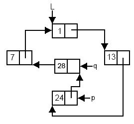

Ştergerea unui nod dintr-o listă simplu înlănţuită circulară
Pentru ştergere vom implementa o funcţie denumită Stergere cu doi parametri:
L – pointer care conţine adresa primului nod al listei din care se face ştergerea; acest parametru va fi transmis prin referinţă, deoarece în urma ştergerii, începutul listei se poate modifica;
p – pointer care conţine adresa nodului din listă care precede nodul ce urmează a fi şters (se transmite adresa nodului precedent şi nu adresa nodului de şters pentru a putea restaura corect legăturile în listă).
La ştergere apar două cazuri distincte:
Dacă p->urm == L va fi şters primul nod din listă, deci valoarea parametrului L va fi actualizată (va primi adresa următorului nod din listă sau NULL dacă lista era formată dintr-un singur nod);
Dacă p->urm != L va fi şters un nod oarecare din interiorul listei.

Cum se şterge un nod dintr-o listă simplu înlănţuită circulară?
Memorăm în variabila q adresa nodului ce urmează să fie sterş (q = p->urm);
Modificăm legătura care există de la p la q şi o transformăm într-o legătură la nodul care urmează după cel ce va fi şters (p->urm = q->urm);
La sfârşit eliberăm zona de memorie alocată nodului ce a fost eliminată din listă (delete q).